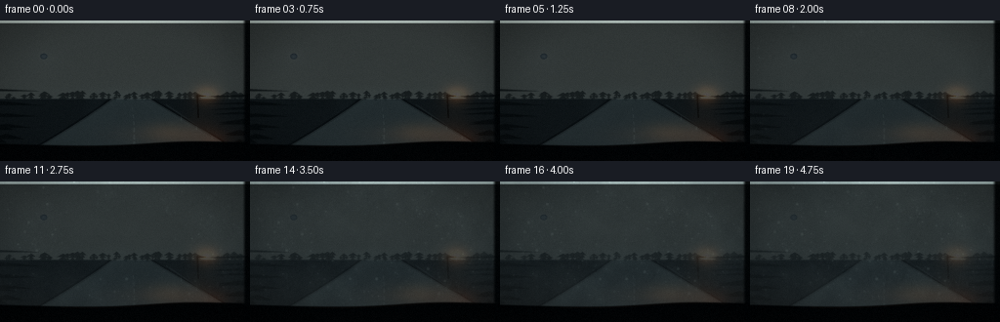
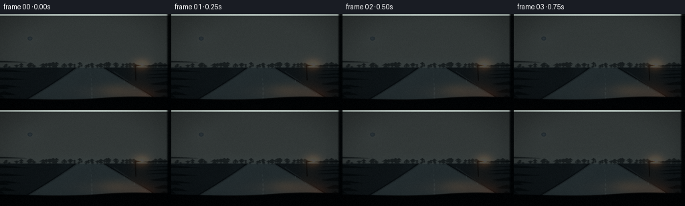
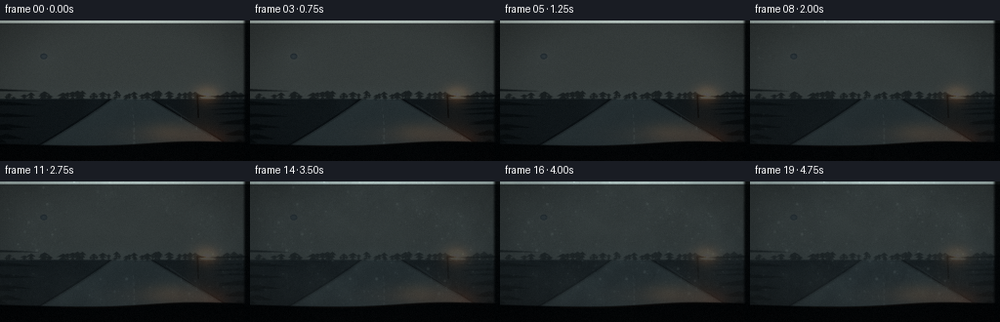
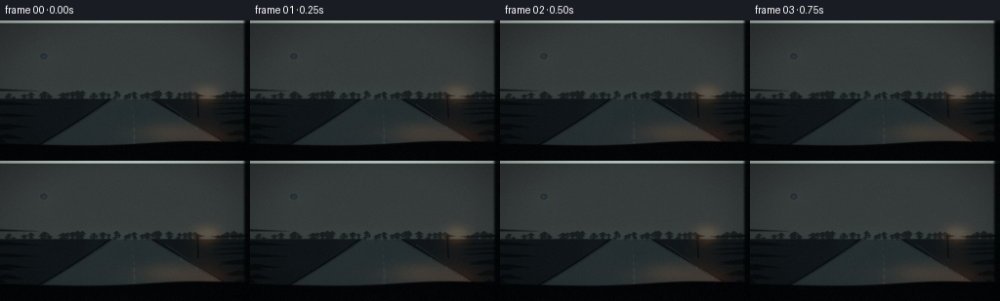
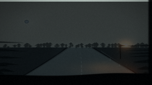
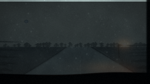

CODING AGENTS AS PIXEL WORLD MODELS
traex/DeepSeek-V4.1-Flash · phygen_102
点击播放 · 原生 RGB 像素
逐轮保存的候选
回放视频、检查图与代码变化。
每份候选均可单独播放。实际图片检查记录在下方工具轨迹中。
候选 01播放与检查图
点击播放 · 原生 RGB 像素


展开代码变化
--- 上一保存版本
+++ 本次保存版本
@@ -0,0 +1,454 @@
+from pathlib import Path
+
+import cv2
+import numpy as np
+from scipy.ndimage import gaussian_filter
+
+import artifact_io
+
+
+CASE_DIR = Path(__file__).resolve().parent
+OUT_W, OUT_H = 256, 144
+FRAMES = 20
+FPS = 4.0
+SS = 4
+W, H = OUT_W * SS, OUT_H * SS
+
+
+def smoothstep(edge0, edge1, value):
+ denominator = np.maximum(np.asarray(edge1) - np.asarray(edge0), 1e-6)
+ value = np.clip((value - edge0) / denominator, 0.0, 1.0)
+ return value * value * (3.0 - 2.0 * value)
+
+
+def fbm(rng, octaves=6, first=3):
+ total = np.zeros((H, W), dtype=np.float32)
+ weight = 0.0
+ amplitude = 1.0
+ for octave in range(octaves):
+ gh = max(2, first * (2**octave))
+ gw = max(3, int(gh * W / H))
+ lattice = rng.random((gh, gw), dtype=np.float32)
+ field = cv2.resize(lattice, (W, H), interpolation=cv2.INTER_CUBIC)
+ total += field * amplitude
+ weight += amplitude
+ amplitude *= 0.54
+ total /= weight
+ return np.clip((total - 0.18) / 0.64, 0.0, 1.0)
+
+
+def add_glow(image, xx, yy, cx, cy, sx, sy, color, strength):
+ glow = np.exp(-(((xx - cx) / sx) ** 2 + ((yy - cy) / sy) ** 2))
+ image += glow[..., None] * np.asarray(color, dtype=np.float32) * strength
+
+
+def make_background(rng):
+ yy, xx = np.mgrid[0:H, 0:W].astype(np.float32)
+ xx /= W - 1
+ yy /= H - 1
+
+ horizon = 0.555
+ upper = np.clip(yy / horizon, 0.0, 1.0)
+ sky_top = np.array([0.025, 0.052, 0.092], dtype=np.float32)
+ sky_bottom = np.array([0.145, 0.235, 0.270], dtype=np.float32)
+ image = sky_top + (sky_bottom - sky_top) * (upper[..., None] ** 1.55)
+
+ cloud = fbm(rng, octaves=6, first=2)
+ cloud2 = fbm(rng, octaves=5, first=4)
+ image += ((cloud - 0.50) * 0.055 + (cloud2 - 0.50) * 0.028)[..., None]
+
+ add_glow(image, xx, yy, 0.175, 0.255, 0.065, 0.085, (0.36, 0.46, 0.52), 0.34)
+ add_glow(image, xx, yy, 0.175, 0.255, 0.018, 0.025, (0.88, 0.92, 0.91), 0.48)
+ moon_r = np.sqrt(((xx - 0.175) * 1.45) ** 2 + (yy - 0.255) ** 2)
+ moon = smoothstep(0.021, 0.016, moon_r)
+ image = image * (1.0 - moon[..., None] * 0.85) + np.array([0.82, 0.87, 0.84]) * moon[..., None] * 0.85
+
+ add_glow(image, xx, yy, 0.50, 0.545, 0.35, 0.060, (0.20, 0.29, 0.31), 0.25)
+
+ # Distant pine treeline.
+ far_mask = np.zeros((H, W), dtype=np.float32)
+ for _ in range(74):
+ cx = rng.uniform(-0.03, 1.03)
+ base = horizon + rng.uniform(-0.005, 0.018)
+ height = rng.uniform(0.025, 0.090)
+ width = height * rng.uniform(0.22, 0.38)
+ px, py = int(cx * (W - 1)), int(base * (H - 1))
+ for layer in range(3):
+ y0 = py - int(height * (0.26 + 0.22 * layer) * H)
+ y1 = py - int(height * (0.02 + 0.20 * layer) * H)
+ half = int(width * (0.34 + 0.25 * layer) * W)
+ cv2.fillPoly(
+ far_mask,
+ [np.array([(px, y0), (px - half, y1), (px + half, y1)], dtype=np.int32)],
+ 1.0,
+ )
+ far_mask = gaussian_filter(far_mask, 0.8)
+ image = image * (1.0 - far_mask[..., None] * 0.62)
+ image += far_mask[..., None] * np.array([0.030, 0.060, 0.067]) * 0.62
+
+ # Snowy ground and the dark ribbon of the road.
+ ground = smoothstep(horizon - 0.003, horizon + 0.012, yy)
+ ground_color = (
+ np.array([0.30, 0.39, 0.42], dtype=np.float32)
+ + (cloud2[..., None] - 0.5) * np.array([0.035, 0.042, 0.045], dtype=np.float32)
+ )
+ image = image * (1.0 - ground[..., None] * 0.78) + ground_color * ground[..., None] * 0.78
+
+ depth = np.clip((yy - horizon) / (1.0 - horizon), 0.0, 1.0)
+ road_center = 0.525 + 0.012 * np.sin(depth * 2.6)
+ road_half = 0.070 + 0.405 * (depth**1.04)
+ road = smoothstep(road_half + 0.005, road_half - 0.005, np.abs(xx - road_center))
+ road *= smoothstep(horizon - 0.002, horizon + 0.008, yy)
+ road_color = (
+ np.array([0.052, 0.073, 0.087], dtype=np.float32)
+ + (cloud[..., None] - 0.5) * 0.018
+ + depth[..., None] * np.array([0.014, 0.020, 0.025], dtype=np.float32)
+ )
+ image = image * (1.0 - road[..., None] * 0.92) + road_color * road[..., None] * 0.92
+
+ # Moon sheen down the icy road.
+ sheen = np.exp(-((xx - (0.38 + 0.06 * depth)) / (0.035 + 0.08 * depth)) ** 2)
+ sheen *= np.exp(-((yy - 0.73) / 0.30) ** 2) * road
+ image += sheen[..., None] * np.array([0.050, 0.066, 0.073], dtype=np.float32)
+
+ # Snowy road edges.
+ edge_dist = np.minimum(
+ np.abs(np.abs(xx - road_center) - road_half),
+ np.abs(np.abs(xx - road_center) - (road_half + 0.012)),
+ )
+ edge = smoothstep(0.006, 0.001, edge_dist) * (yy > horizon)
+ image += edge[..., None] * np.array([0.095, 0.115, 0.118], dtype=np.float32)
+
+ # Broken centerline, compressed by perspective.
+ lane_mask = np.zeros((H, W), dtype=np.float32)
+ for start in np.linspace(0.04, 0.92, 9):
+ end = start + 0.035 + 0.035 * start
+ ya, yb = int((horizon + (1 - horizon) * start) * H), int((horizon + (1 - horizon) * end) * H)
+ xa = int((0.525 + 0.012 * np.sin(start * 2.6)) * W)
+ xb = int((0.525 + 0.012 * np.sin(end * 2.6)) * W)
+ thickness = max(1, int((1.0 + 7.0 * start) * SS / 3))
+ cv2.line(lane_mask, (xa, ya), (xb, yb), 1.0, thickness)
+ lane_mask = gaussian_filter(lane_mask, 0.7)
+ image += lane_mask[..., None] * np.array([0.13, 0.145, 0.145], dtype=np.float32)
+
+ # A small roadside lamp gives the cold scene one warm, believable light source.
+ post_mask = np.zeros((H, W), dtype=np.float32)
+ lamp_x = int(0.790 * W)
+ lamp_top = int(0.532 * H)
+ lamp_bottom = int(0.690 * H)
+ cv2.line(post_mask, (lamp_x, lamp_top), (lamp_x + int(0.004 * W), lamp_bottom), 1.0, 3 * SS // 2)
+ cv2.line(
+ post_mask,
+ (lamp_x + int(0.004 * W), lamp_top + 3),
+ (lamp_x + int(0.035 * W), lamp_top + 3),
+ 1.0,
+ 2 * SS // 2,
+ )
+ image *= 1.0 - post_mask[..., None] * 0.72
+ add_glow(image, xx, yy, 0.827, 0.534, 0.045, 0.060, (0.95, 0.52, 0.22), 0.50)
+ add_glow(image, xx, yy, 0.827, 0.534, 0.010, 0.013, (1.00, 0.82, 0.50), 0.95)
+ add_glow(image, xx, yy, 0.815, 0.725, 0.070, 0.160, (0.54, 0.29, 0.12), 0.20)
+
+ # A guardrail catches the lamp and moon.
+ rail_mask = np.zeros((H, W), dtype=np.float32)
+ rail_points = []
+ for step in np.linspace(0.10, 0.92, 16):
+ x = 0.525 + 0.070 + 0.405 * step + 0.032 * (1.0 - step)
+ y = horizon + (1.0 - horizon) * step
+ rail_points.append((int(x * W), int(y * H)))
+ cv2.polylines(rail_mask, [np.array(rail_points, dtype=np.int32)], False, 1.0, 2 * SS // 2)
+ for index in range(3, len(rail_points), 3):
+ px, py = rail_points[index]
+ cv2.line(rail_mask, (px, py), (px, min(H - 1, py + int(0.045 * H * (1.0 - index / 18)))), 1.0, SS)
+ rail_mask = gaussian_filter(rail_mask, 0.6)
+ image += rail_mask[..., None] * np.array([0.12, 0.14, 0.145], dtype=np.float32)
+
+ # Near conifers frame the view without hiding its center.
+ near_mask = np.zeros((H, W), dtype=np.float32)
+ near_specs = [
+ (-0.02, 0.88, 0.46, 0.19),
+ (0.025, 0.93, 0.40, 0.17),
+ (0.995, 0.92, 0.46, 0.20),
+ (0.958, 0.89, 0.36, 0.14),
+ ]
+ for cx, base, height, width in near_specs:
+ px, py = int(cx * W), int(base * H)
+ for layer in range(5):
+ y0 = py - int(height * (0.13 + 0.18 * layer) * H)
+ y1 = py - int(height * (0.02 + 0.20 * layer) * H)
+ half = int(width * (0.25 + 0.17 * layer) * W)
+ cv2.fillPoly(
+ near_mask,
+ [np.array([(px, y0), (px - half, y1), (px + half, y1)], dtype=np.int32)],
+ 1.0,
+ )
+ near_mask = gaussian_filter(near_mask, 1.3)
+ image = image * (1.0 - near_mask[..., None] * 0.72)
+ image += near_mask[..., None] * np.array([0.018, 0.040, 0.044]) * 0.72
+
+ # Warm cabin reflections on the inner glass.
+ warm = np.zeros((H, W, 3), dtype=np.float32)
+ add_glow(warm, xx, yy, 0.765, 0.835, 0.190, 0.070, (0.96, 0.43, 0.15), 0.34)
+ add_glow(warm, xx, yy, 0.665, 0.785, 0.085, 0.032, (1.00, 0.58, 0.22), 0.32)
+ add_glow(warm, xx, yy, 0.862, 0.868, 0.038, 0.050, (0.96, 0.33, 0.10), 0.36)
+ add_glow(warm, xx, yy, 0.505, 0.808, 0.120, 0.022, (0.76, 0.29, 0.09), 0.14)
+ warm = gaussian_filter(warm, sigma=(5.5 * SS, 5.5 * SS, 0))
+ image += warm
+
+ return np.clip(image, 0.0, 1.0), warm
+
+
+def make_droplets(rng):
+ count = 1550
+ cluster_centers = np.column_stack(
+ (
+ rng.beta(1.2, 1.2, 24),
+ rng.beta(1.45, 1.75, 24),
+ )
+ )
+ points = []
+ for _ in range(count):
+ if rng.random() < 0.47:
+ center = cluster_centers[rng.integers(0, len(cluster_centers))]
+ x = np.clip(rng.normal(center[0], rng.uniform(0.025, 0.085)), 0.006, 0.994)
+ y = np.clip(rng.normal(center[1], rng.uniform(0.020, 0.075)), 0.012, 0.905)
+ else:
+ x = rng.beta(1.20, 1.20)
+ y = rng.beta(1.35, 1.60) * 0.91
+ points.append((x, y))
+ points = np.asarray(points, dtype=np.float32)
+
+ edge_distance = np.minimum.reduce(
+ [
+ points[:, 0],
+ 1.0 - points[:, 0],
+ points[:, 1] / 0.91,
+ (0.91 - points[:, 1]) / 0.91,
+ ]
+ )
+ activation = np.clip(
+ 0.025 + 0.72 * np.clip(edge_distance / 0.42, 0.0, 1.0) + 0.24 * rng.random(count),
+ 0.02,
+ 0.985,
+ )
+ radii = (0.40 + 3.65 * rng.random(count) ** 5.4) * SS
+ large = rng.random(count) > 0.982
+ radii[large] = rng.uniform(4.5, 7.2, large.sum()) * SS
+ return {
+ "points": points,
+ "activation": activation,
+ "radii": radii,
+ "alpha": rng.uniform(0.42, 0.88, count),
+ }
+
+
+def make_runnels(rng):
+ runnels = []
+ for _ in range(9):
+ x = rng.uniform(0.08, 0.92)
+ y = rng.uniform(0.24, 0.68)
+ length = rng.uniform(0.10, 0.27)
+ activation = rng.uniform(0.40, 0.76)
+ phase = rng.uniform(0.0, 6.2)
+ runnels.append((x, y, length, activation, phase))
+ return runnels
+
+
+def draw_condensation_effects(image, progress, drops, runnels):
+ dark = np.zeros((H, W), dtype=np.float32)
+ fill = np.zeros((H, W), dtype=np.float32)
+ rim = np.zeros((H, W), dtype=np.float32)
+ glint = np.zeros((H, W), dtype=np.float32)
+
+ for (nx, ny), activation, radius, alpha in zip(
+ drops["points"], drops["activation"], drops["radii"], drops["alpha"]
+ ):
+ if progress <= activation:
+ continue
+ growth = float(smoothstep(activation, min(0.995, activation + 0.17), progress))
+ r = max(1, int(round(radius * growth)))
+ cx, cy = int(nx * (W - 1)), int(ny * (H - 1))
+ if r <= 1:
+ cv2.circle(glint, (cx, cy), 1, 0.42 * alpha, -1)
+ continue
+ cv2.circle(fill, (cx, cy), r, 0.22 * alpha, -1)
+ cv2.circle(rim, (cx, cy), r, 0.34 * alpha, max(1, SS // 3))
+ cv2.circle(dark, (cx + max(1, r // 5), cy + max(1, r // 4)), r, 0.12 * alpha, max(1, SS // 2))
+ hx = cx - max(1, int(r * 0.32))
+ hy = cy - max(1, int(r * 0.35))
+ hr = max(1, int(r * 0.24))
+ cv2.circle(glint, (hx, hy), hr, 0.72 * alpha, -1)
+
+ for x, y0, length, activation, phase in runnels:
+ if progress <= activation:
+ continue
+ growth = float(smoothstep(activation, min(1.0, activation + 0.28), progress))
+ y1 = y0 + length * growth
+ pts = []
+ for step in np.linspace(0.0, 1.0, 15):
+ yy = y0 + (y1 - y0) * step
+ wiggle = 0.0024 * np.sin(step * 8.5 + phase) + 0.0012 * np.sin(step * 19.0 + phase * 0.7)
+ pts.append((int((x + wiggle) * (W - 1)), int(yy * (H - 1))))
+ pts = np.asarray(pts, dtype=np.int32)
+ cv2.polylines(rim, [pts], False, 0.30 * growth, max(1, SS // 2))
+ cv2.polylines(dark, [pts + np.array([max(1, SS // 2), 0])], False, 0.20 * growth, max(1, SS // 3))
+ end_x, end_y = pts[-1]
+ cv2.circle(fill, (int(end_x), int(end_y)), max(2, int(2.2 * SS * growth)), 0.25 * growth, -1)
+ cv2.circle(glint, (int(end_x - SS * 0.5), int(end_y - SS * 0.6)), max(1, int(SS * 0.7)), 0.55 * growth, -1)
+
+ dark = gaussian_filter(dark, 0.55 * SS)
+ fill = gaussian_filter(fill, 0.45 * SS)
+ rim = gaussian_filter(rim, 0.38 * SS)
+ glint = gaussian_filter(glint, 0.42 * SS)
+
+ image *= 1.0 - np.clip(dark, 0.0, 0.35)[..., None] * 0.55
+ image += np.clip(fill, 0.0, 0.55)[..., None] * np.array([0.075, 0.090, 0.095])
+ image += np.clip(rim, 0.0, 0.65)[..., None] * np.array([0.105, 0.125, 0.130])
+ image += np.clip(glint, 0.0, 0.85)[..., None] * np.array([0.32, 0.35, 0.34])
+ return image
+
+
+def render_frame(index, background, warm, outside_fog_a, outside_fog_b, condensation_noise, drops, runnels):
+ t = index / (FRAMES - 1)
+ image = background.copy()
+ yy, xx = np.mgrid[0:H, 0:W].astype(np.float32)
+ xx /= W - 1
+ yy /= H - 1
+
+ # The outside fog bank advances across the cold road and softens the distance.
+ outside_progress = float(smoothstep(0.02, 0.78, t))
+ shift_x = int(index * 2.4 * SS)
+ shift_y = int(index * 0.7 * SS)
+ fog_tex = (
+ 0.66 * np.roll(outside_fog_a, -shift_x, axis=1)
+ + 0.34 * np.roll(outside_fog_b, shift_y, axis=0)
+ )
+ low_band = np.exp(-((yy - 0.585) / (0.12 + 0.06 * outside_progress)) ** 2)
+ front = smoothstep(0.90, 0.15, xx - 0.48 * outside_progress)
+ bank = 1.0 / (1.0 + np.exp(-(5.1 * (0.50 * fog_tex + 0.35 * low_band + 0.30 * front + 0.25 * outside_progress - 0.78))))
+ bank *= 0.22 + 0.30 * outside_progress
+ fog_color = np.array([0.39, 0.49, 0.52], dtype=np.float32)
+ image = image * (1.0 - bank[..., None] * 0.55) + fog_color * bank[..., None] * 0.55
+ haze = 0.025 + 0.105 * outside_progress
+ image = image * (1.0 - haze) + np.array([0.28, 0.36, 0.39], dtype=np.float32) * haze
+
+ # Keep the lamp glow legible through the advancing outside fog.
+ add_glow(image, xx, yy, 0.827, 0.534, 0.060, 0.075, (0.62, 0.32, 0.14), 0.20 + 0.12 * outside_progress)
+
+ # Condensation begins at the colder edges, then spreads as a patchy film.
+ progress = float(np.clip((index - 0.55) / (FRAMES - 1.55), 0.0, 1.0))
+ progress = float(smoothstep(0.0, 1.0, progress))
+ edge_dist = np.minimum.reduce([xx, 1.0 - xx, yy / 0.91, (0.91 - yy) / 0.91])
+ edge_field = np.exp(-edge_dist / 0.105)
+ bottom_field = np.exp(-((0.90 - yy) / 0.16) ** 2)
+ texture = condensation_noise
+ signal = (
+ progress * (0.88 + 0.76 * edge_field + 0.50 * bottom_field + 0.62 * (texture - 0.50))
+ - 0.67
+ )
+ mask = 1.0 / (1.0 + np.exp(-4.7 * signal))
+ mask *= 1.0 - smoothstep(0.925, 0.955, yy)
+ mask = np.clip(mask, 0.0, 0.965)
+
+ scattered = cv2.GaussianBlur(image, (0, 0), sigmaX=2.2 * SS, sigmaY=2.2 * SS)
+ fog_amount = mask * (0.47 + 0.20 * progress)
+ fog_texture = (texture[..., None] - 0.50) * np.array([0.13, 0.13, 0.11], dtype=np.float32)
+ warm_fog = np.clip((yy - 0.62) / 0.28, 0.0, 1.0)[..., None] * np.array([0.10, 0.045, 0.010])
+ fog_color = np.array([0.61, 0.70, 0.72], dtype=np.float32) + fog_texture + warm_fog
+ image = (
+ image * (1.0 - fog_amount[..., None] * 0.66)
+ + scattered * fog_amount[..., None] * 0.20
+ + fog_color * fog_amount[..., None] * 0.46
+ )
+
+ # Fine condensation grain and the larger beads are drawn after the film.
+ micro = (texture - 0.5) * mask
+ image += micro[..., None] * np.array([0.060, 0.068, 0.067], dtype=np.float32)
+ image = draw_condensation_effects(image, progress, drops, runnels)
+
+ # Glass-borne amber reflection continues to scatter through the droplets.
+ image += warm * (0.10 + 0.10 * mask[..., None])
+
+ # Slight bloom gives the cold light and lamp a wet-glass diffusion.
+ highlights = np.maximum(image - 0.58, 0.0)
+ bloom = cv2.GaussianBlur(highlights, (0, 0), sigmaX=4.5 * SS, sigmaY=4.5 * SS)
+ image += bloom * (0.13 + 0.10 * progress)
+
+ # Interior dashboard and window seal sit in front of the glass.
+ dash_top = 0.882 + 0.010 * np.sin((xx - 0.08) * 5.2) - 0.018 * np.exp(-((xx - 0.73) / 0.21) ** 2)
+ dash_alpha = smoothstep(dash_top - 0.006, dash_top + 0.006, yy)
+ dash_shade = 0.020 + 0.018 * np.clip((yy - 0.88) / 0.12, 0.0, 1.0)
+ dash_color = np.stack(
+ [
+ dash_shade * 1.15,
+ dash_shade * 0.88,
+ dash_shade * 0.72,
+ ],
+ axis=-1,
+ )
+ image = image * (1.0 - dash_alpha[..., None]) + dash_color * dash_alpha[..., None]
+ dash_glint = np.exp(-((yy - (dash_top + 0.007)) / 0.005) ** 2) * (xx > 0.24) * (xx < 0.91)
+ image += dash_glint[..., None] * np.array([0.10, 0.052, 0.023], dtype=np.float32) * (0.45 + 0.35 * progress)
+
+ pillar_alpha = smoothstep(0.969, 0.986, xx)
+ pillar_color = np.array([0.018, 0.020, 0.019], dtype=np.float32)
+ image = image * (1.0 - pillar_alpha[..., None] * 0.94) + pillar_color * pillar_alpha[..., None] * 0.94
+ top_alpha = smoothstep(0.018, 0.003, yy)
+ image *= 1.0 - top_alpha[..., None] * 0.72
+
+ # Cool shadows, restrained warm highlights, and a soft lens vignette.
+ luminance = image.mean(axis=2, keepdims=True)
+ image += (1.0 - luminance) * np.array([-0.005, 0.004, 0.010], dtype=np.float32)
+ image += luminance * np.array([0.008, 0.002, -0.004], dtype=np.float32)
+ radius = np.sqrt(((xx - 0.5) * 1.05) ** 2 + ((yy - 0.49) * 0.95) ** 2)
+ vignette = 1.0 - 0.28 * smoothstep(0.35, 0.78, radius)
+ image *= vignette[..., None]
+
+ return np.clip(image, 0.0, 1.0)
+
+
+def main():
+ rng = np.random.default_rng(102)
+ background, warm = make_background(rng)
+ outside_fog_a = fbm(rng, octaves=7, first=4)
+ outside_fog_b = fbm(rng, octaves=6, first=3)
+ condensation_noise = fbm(rng, octaves=7, first=5)
+ drops = make_droplets(rng)
+ runnels = make_runnels(rng)
+
+ frames = []
+ for index in range(FRAMES):
+ high = render_frame(
+ index,
+ background,
+ warm,
+ outside_fog_a,
+ outside_fog_b,
+ condensation_noise,
+ drops,
+ runnels,
+ )
+ small = cv2.resize(high, (OUT_W, OUT_H), interpolation=cv2.INTER_AREA)
+ soft = cv2.GaussianBlur(small, (0, 0), 0.55)
+ small = np.clip(small + 0.20 * (small - soft), 0.0, 1.0)
+ grain = np.random.default_rng(500 + index).normal(0.0, 0.0045, (OUT_H, OUT_W, 1)).astype(np.float32)
+ small = np.clip(small + grain, 0.0, 1.0)
+ frames.append((small * 255.0 + 0.5).astype(np.uint8))
+
+ frames = np.asarray(frames, dtype=np.uint8)
+ artifact_io.save(frames, CASE_DIR)
+
+ writer = cv2.VideoWriter(
+ str(CASE_DIR / "video.mp4"),
+ cv2.VideoWriter_fourcc(*"mp4v"),
+ FPS,
+ (OUT_W, OUT_H),
+ )
+ if writer.isOpened():
+ for frame in frames:
+ writer.write(cv2.cvtColor(frame, cv2.COLOR_RGB2BGR))
+ writer.release()
+
+
+if __name__ == "__main__":
+ main()
候选 02播放与检查图
点击播放 · 原生 RGB 像素


展开代码变化
--- 上一保存版本
+++ 本次保存版本
@@ -351,14 +351,14 @@
mask = np.clip(mask, 0.0, 0.965)
scattered = cv2.GaussianBlur(image, (0, 0), sigmaX=2.2 * SS, sigmaY=2.2 * SS)
- fog_amount = mask * (0.47 + 0.20 * progress)
+ fog_amount = mask * (0.40 + 0.11 * progress)
fog_texture = (texture[..., None] - 0.50) * np.array([0.13, 0.13, 0.11], dtype=np.float32)
warm_fog = np.clip((yy - 0.62) / 0.28, 0.0, 1.0)[..., None] * np.array([0.10, 0.045, 0.010])
fog_color = np.array([0.61, 0.70, 0.72], dtype=np.float32) + fog_texture + warm_fog
image = (
- image * (1.0 - fog_amount[..., None] * 0.66)
- + scattered * fog_amount[..., None] * 0.20
- + fog_color * fog_amount[..., None] * 0.46
+ image * (1.0 - fog_amount[..., None] * 0.62)
+ + scattered * fog_amount[..., None] * 0.22
+ + fog_color * fog_amount[..., None] * 0.42
)
# Fine condensation grain and the larger beads are drawn after the film.
@@ -367,7 +367,7 @@
image = draw_condensation_effects(image, progress, drops, runnels)
# Glass-borne amber reflection continues to scatter through the droplets.
- image += warm * (0.10 + 0.10 * mask[..., None])
+ image += warm * (0.11 + 0.13 * mask[..., None])
# Slight bloom gives the cold light and lamp a wet-glass diffusion.
highlights = np.maximum(image - 0.58, 0.0)
@@ -400,6 +400,7 @@
luminance = image.mean(axis=2, keepdims=True)
image += (1.0 - luminance) * np.array([-0.005, 0.004, 0.010], dtype=np.float32)
image += luminance * np.array([0.008, 0.002, -0.004], dtype=np.float32)
+ image = image * 1.035 + 0.006
radius = np.sqrt(((xx - 0.5) * 1.05) ** 2 + ((yy - 0.49) * 0.95) ** 2)
vignette = 1.0 - 0.28 * smoothstep(0.35, 0.78, radius)
image *= vignette[..., None]
可观测工具轨迹
实际执行的命令与返回图片。
命令 1exit 0
/bin/bash -c "sed -n '1,240p' prompt.txt"
命令 2exit 0
/bin/bash -c "sed -n '1,280p' GENERATION_RULES.md"
命令 3exit 0
/bin/bash -c 'cat task_spec.json'
命令 4exit 0
/bin/bash -c "printf 'FILES\\n'; find . -maxdepth 2 -type f -printf '%p\\n' | sort; printf '\\nTOOLS\\n'; command -v ffmpeg || true; command -v python3 || true; command -v blender || true; command -v convert || true; command -v magick || true; command -v node || true"
命令 5exit 0
/bin/bash -c "sed -n '1,260p' artifact_io.py"
命令 6exit 0
/bin/bash -c "sed -n '1,280p' player_template.html"
命令 7exit 0
/bin/bash -c "python3 - <<'PY'
import numpy, PIL
print('numpy', numpy.__version__)
print('Pillow', PIL.__version__)
try:
import cv2
print('cv2', cv2.__version__)
except Exception as e: print('no cv2', e)
try:
import scipy
print('scipy', scipy.__version__)
except Exception as e: print('no scipy', e)
PY"命令 8exit 1
/bin/bash -c 'time python3 generate.py'
命令 9exit 0
/bin/bash -c 'time python3 generate.py'
命令 10exit 127
/bin/bash -c "python3 - <<'PY'
import numpy as np
from PIL import Image
from pathlib import Path
fs=[np.asarray(Image.open(p),dtype=np.float32) for p in sorted(Path('frames').glob('*.png'))]
print('shape',fs[0].shape)
print('mean_luma', ' '.join(f'{f.mean():.1f}' for f in fs))
print('adjacent_mae', ' '.join(f'{np.abs(fs[i]-fs[i-1]).mean():.2f}' for i in range(1,len(fs))))
print('first_last_mae', f'{np.abs(fs[-1]-fs[0]).mean():.2f}')
PY
printf '\\nOUTPUTS\\n'
ls -lh generate.py video.mp4 pixels.npz index.html inspection.png transition_check.png
file video.mp4"命令 11exit 0
/bin/bash -c 'mkdir -p candidates/candidate_01 && cp -a frames pixels.npz inspection.png transition_check.png index.html video.mp4 candidates/candidate_01/'
命令 12exit 0
/bin/bash -c 'python3 generate.py'
命令 13exit 0
/bin/bash -c "mkdir -p candidates/candidate_02_final && cp -a frames pixels.npz inspection.png transition_check.png index.html video.mp4 candidates/candidate_02_final/ && python3 - <<'PY'
from pathlib import Path
import json
import cv2
import numpy as np
from PIL import Image
spec=json.loads(Path('task_spec.json').read_text())
files=sorted(Path('frames').glob('*.png'))
frames=[np.asarray(Image.open(p).convert('RGB')) for p in files]
assert len(frames)==spec['frames']==20
assert all(f.shape==(spec['height'],spec['width'],3) for f in frames)
assert all(f.dtype==np.uint8 for f in frames)
cap=cv2.VideoCapture('video.mp4')
count=int(cap.get(cv2.CAP_PROP_FRAME_COUNT)); fps=cap.get(cv2.CAP_PROP_FPS)
w=int(cap.get(cv2.CAP_PROP_FRAME_WIDTH)); h=int(cap.get(cv2.CAP_PROP_FRAME_HEIGHT))
read=[]
while True:
ok,frame=cap.read()
if not ok: break
read.append(frame)
cap.release()
assert len(read)==20, len(read)
assert (w,h)==(256,144)
assert abs(fps-4.0)<0.01
print(f'frames={len(frames)} size={w}x{h} fps={fps:.3f} mp4_frames={len(read)}')
print(f'first_last_mae={np.abs(frames[-1].astype(float)-frames[0]).mean():.2f}')
print(f'adjacent_mae_max={max(np.abs(frames[i].astype(float)-frames[i-1]).mean() for i in range(1,20)):.2f}')
print('artifacts:', ', '.join(sorted(p.name for p in Path('.').glob('*') if p.is_file())))
PY"视觉工具实际返回图片 1

视觉工具实际返回图片 2

视觉工具实际返回图片 3

视觉工具实际返回图片 4

保存候选 2 份；完成命令 13 次；可验证图片返回 4 张。原始 API 响应与完整日志保留在本地。